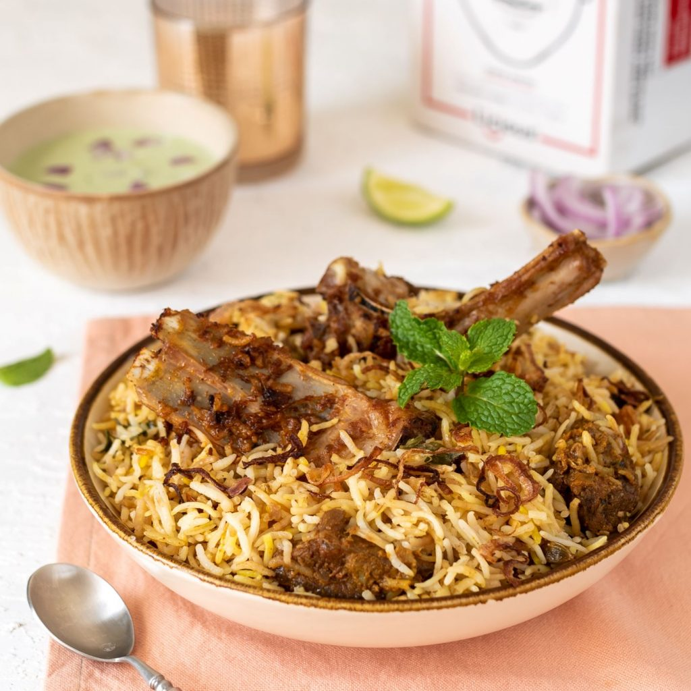

Mutton Biryani

About Mutton Biryani Recipe:
A hearty mutton biryani that will impress your guests instantly. Biryani is a dish that nobody can ever resist.
Be it a dinner party or any celebratory occasion, biryani seems to be an ideal main dish to serve along with a spicy salan or refreshing raita.
Ingredients of Mutton Biryani
- For the rice:
- 1 star anise
- 500 gms basmati rice
- 2 Bay leaves
- 2 Black cardamom
- 2 tsp black cumin seeds
- 6 Black peppercorn
- 6 Green cardamom
- 2 Cinnamon sticks
- For mutton marination:
- 1 kg mutton
- 1 tbsp garam masala
- 1 tbsp garlic paste
- 1 tbsp ginger paste
- Other ingredients:
- 4 onions, sliced
- 2 tomatoes, chopped
- 1/4 cup milk (warm)
- Ghee
How to Make Mutton Biryani
Marinate the mutton:
- To the mutton add the beaten curd, ginger-garlic paste, raw papaya paste, chilli powder, salt, lemon juice, garam masala.
- Allow the mutton to marinate for 3 hours.
Prepare fried onions or Barista:
- Slice 2 onions very thinly. Separate the slices.
- In a pan or kadai add oil and fry the onion slices till nicely brow
- Take care not to burn them. Fry in small batches. Do not put all the slices at a time, that will lead to lumpy messy onions.
- Take care not to burn them. Fry in small batches. Do not put all the slices at a time, that will lead to lumpy messy onions.
- Take care not to burn them. Fry in small batches. Do not put all the slices at a time, that will lead to lumpy messy onions.
- Keep them on a paper-towel lined plate. This crispy brown fried onion slices are called Barista.
Cook the mutton:
- Heat ghee in a thick-bottomed pan.
- Add remaining sliced onions and green chillies. Cook, stirring continuously, till onions are light golden brown.
- Add ginger paste and garlic paste and mix well.
- Add marinated mutton and cook on high heat for seven to eight minutes.
- Add coriander powder, cumin powder and red chilli powder. Mix thoroughly.
- Stir in three cups of water, bring it to a boil, reduce heat and cook covered till mutton is almost cooked.
- Add tomatoes, salt, garam masala powder and fresh coriander leaves.
- Cook for 15 minutes on medium heat, stirring occasionally. The ghee would be separated from the spices and there should not be any watery gravy to the meat.
Cook the mutton:
- Use only good quality long grain Basmati rice. Soak the rice for 20 minutes in water. Wash well till the water runs clear. Drain all the water.
- In a small piece of cloth take cardamom, cinnamon, cloves, javitri, jaiphal, black peppercorn, shahi jeera, star anise and tie a knot to make a bag (potli).
- Bring 750 ml water to boil, add rice, bay leaf, salt and potli, cover and cook till rice is done 1/3rd.
- Drain the water & remove the whole masala potli.
Recipe Notes
For the full recipe click here